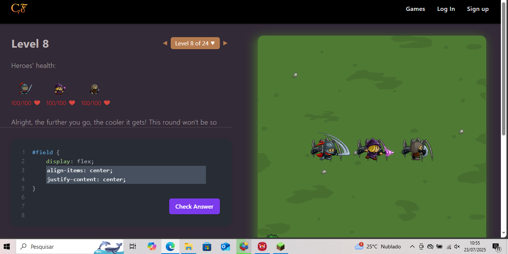

Luick Eduardo Neres Costa
Nível 8

Esse nível apresenta flex-direction: row-reverse. A dificuldade aqui é visualizar que os itens são colocados da direita para a esquerda.
Nível 9

Exige o uso de flex-direction: column. Os sapos devem ser colocados de cima para baixo na vertical.
Nível 10

Combina flex-direction: row-reverse com justify-content: flex-end. Exige mais atenção à inversão do eixo e direção.
Nível 8
Foi necessário alinhar os heróis ao centro tanto vertical quanto horizontalmente com align-items: center e justify-content: center.
Nível 9

Mais difícil por exigir align-items: flex-end (base inferior) e justify-content: space-between (espaçamento entre eles).
Nível 10

Introduz flex-direction: column, mudando o eixo principal para vertical. Isso exige uma nova lógica de alinhamento.
display: flex – Define o container como flexível.flex-direction – Controla a direção dos itens (linha ou coluna).justify-content – Alinha os itens no eixo principal.align-items – Alinha os itens no eixo cruzado.align-self – Alinha individualmente um item dentro do container.order – Define a ordem de exibição dos itens.flex-wrap – Permite que os itens quebrem para outra linha.gap – Espaçamento entre os itens.Imaginei um layout de menu lateral com conteúdo principal. Usaria Flexbox assim:
display: flex no container principal;flex-direction: row para deixar o menu à esquerda e o conteúdo à direita;flex: 1 no conteúdo para ocupar o restante da tela;align-items: stretch para deixar ambos com altura igual;gap para espaçar o menu e o conteúdo.